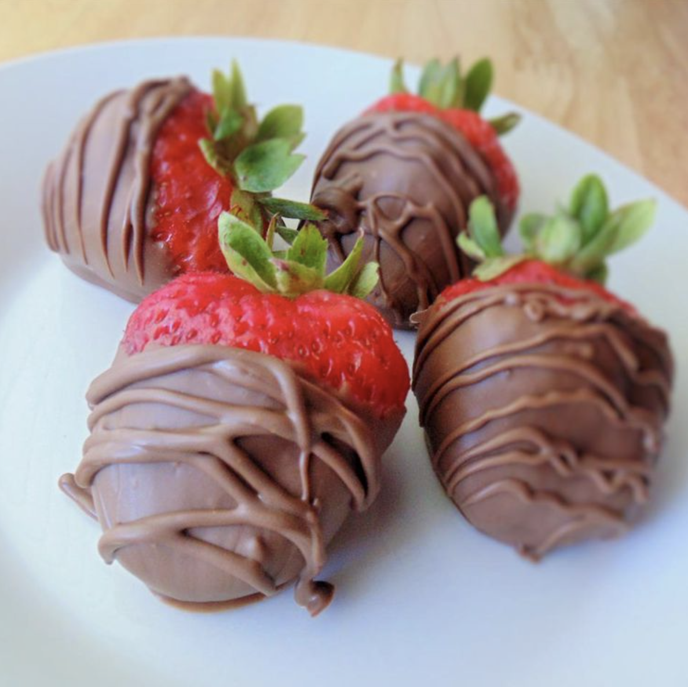

Chocolate Strawberries

Description
Simple chocolate-covered strawberries, great for any occasion.
Ingredients
- 1 (12 ounce) bag semisweet chocolate chips, divided
- 1 (12 ounce) bag milk chocolate chips, divided
- 2 (16 ounce) packages large strawberries
Steps
- Combine 1/2 cup semisweet chocolate chips and 1/2 cup milk chocolate chips in a double boiler over simmering water; stir frequently, scraping down the sides with a rubber spatula to avoid scorching, until melted, 3 to 5 minutes. Remove from heat; stir in remaining semisweet and milk chocolate chips.
- Line a baking sheet with waxed paper.
- Holding strawberries by their stems, swirl through melted chocolate until all sides are evenly coated. Arrange dipped strawberries on the waxed paper.
- Chill strawberries until chocolate coating sets, about 2 hours.